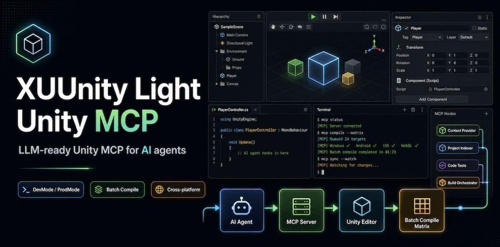
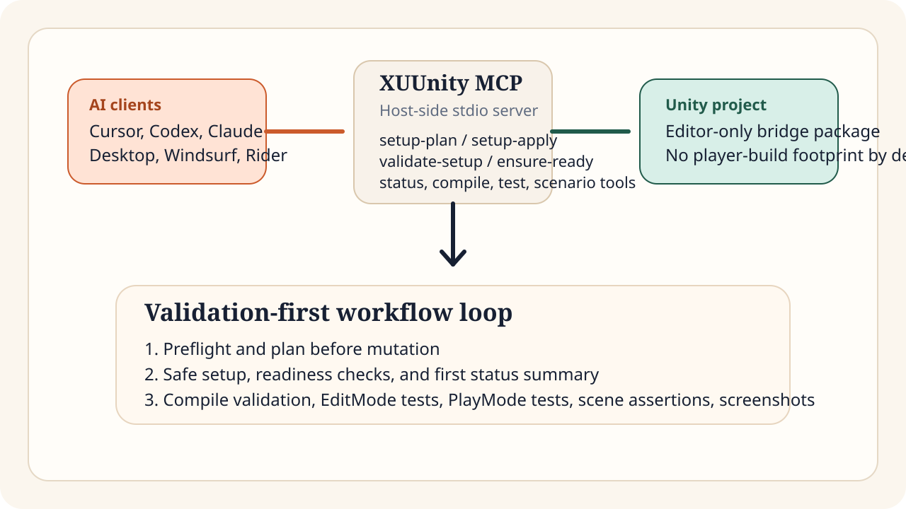
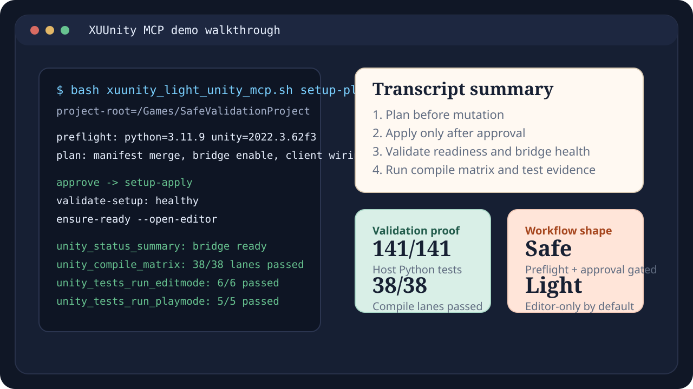

XUUnity MCP, full technical package name XUUnity Light Unity MCP, is a lightweight Unity MCP server for compile validation, tests, scene assertions, screenshots, and safe setup flows.

$ bash xuunity_light_unity_mcp.sh setup-plan \
--project-root /Games/SafeValidationProject
preflight: python=3.11.9 unity=2022.3.62f3
plan: manifest merge + bridge enable + client wiring review
approve -> setup-apply -> validate-setup -> ensure-ready
first proof: unity_status_summary
deep proof: unity_compile_matrix + editmode + playmodeThe xuunity mcp project is FoxsterDev's validation-first Unity MCP. It is built for teams that want AI-driven Unity workflows without widening the default runtime footprint or skipping setup review. The public brand is XUUnity MCP; the package and repository name remain XUUnity Light Unity MCP.
A product owner or lead engineer should be able to decide in under a minute whether this is the right Unity MCP for the team.
Agent-driven install stays gated by setup-plan, review, and explicit approval before mutation.
Compile checks, EditMode tests, PlayMode tests, console tail, scene assertions, and screenshots are first-class.
The base package stays focused on the Unity Editor workflow and avoids normal player-build footprint by default.
These are not vendor-neutral macro benchmarks. They are release-facing engineering signals pulled from the repository validation evidence and comparison notes.
| Lane | Evidence | Latest public signal | Why it matters |
|---|---|---|---|
| Host test reliability | scripts/testing/run_host_python_tests.sh |
141/141 passed | Shows the host-side install, config, parsing, and wrapper logic is covered before user workflows touch Unity. |
| EditMode validation | Package self-tests on validated editors | 6/6 passed | Good fit for AI agents that must prove editor-side correctness after setup or refactors. |
| PlayMode validation | Package self-tests on validated editors | 5/5 passed | Confirms the validation-first story is not limited to static checks or compile-only flows. |
| Multi-project compile matrix | Private consumer validation | 9/9 projects, 38/38 lanes | Important for studios that manage mixed Unity lines or multiple game repos on the same workstation. |
For detailed caveats and source framing, see the repo comparison and status documents.
The product story gets stronger when the site shows not only features, but the operational texture of the workflow.
$ bash xuunity_light_unity_mcp.sh validate-setup \
--project-root /Games/SafeValidationProject
status: healthy
tests: optional capability
next: ensure-ready --open-editor
$ unity_status_summary
bridge: ready
project: connected
$ unity_compile_matrix
lanes_passed: 38/38
XUUnity MCP sits between AI clients and an editor-only Unity package. The workflow is deliberately staged: preflight review, safe setup, readiness checks, then validation commands like status, compile, tests, and scenario operations.
| Layer | Role |
|---|---|
| AI client | Cursor, Codex, Claude Code, Claude Desktop, Rider, Windsurf |
| Host MCP server | stdio server plus setup, validate, ensure-ready, and recovery helpers |
| Unity package | Editor-only bridge for validation-first Unity workflows |
The site now exposes the two tables engineers usually need first: who can connect, and which Unity lines already have release-facing evidence behind them.
| Client | Primary setup surface | Guide |
|---|---|---|
| Codex / Codex-style | ~/.codex/config.toml | Client guides |
| Cursor | .cursor/mcp.json or ~/.cursor/mcp.json | Client guides |
| Claude Code | Client-specific MCP config + helper install | Client guides |
| Claude Desktop | Desktop stdio config + helper install | Client guides |
| Windsurf | Project MCP config + helper install | Client guides |
| Rider | IDE MCP config + helper install | Client guides |
| Unity line | Status | Evidence shape |
|---|---|---|
| Unity 2021.3 LTS | Validated release path | EditMode/PlayMode package self-tests and Git UPM smoke evidence |
| Unity 2022.3 LTS | Validated release path | Installed-editor self-tests on current source line |
| Unity 6000.x | Validated release path | Installed-editor self-tests plus current reflection-aware workflow coverage |
| Optional Test Framework | Capability-gated | Not a hard dependency; install or upgrade only after explicit review |
This is the short site version of the deeper comparison. It is meant to help engineers route themselves quickly by workflow, not to overclaim unknowns.
| Capability / positioning | XUUnity MCP | Official Unity MCP | Broader community Unity MCPs |
|---|---|---|---|
| Safe preflight before mutation | Core via setup-plan and explicit review |
Public-source unknown at this repo-level granularity | Varies by project |
| Compile validation without active platform switch | Core | Public-source unknown | Often undocumented in public summaries |
| EditMode and PlayMode validation | Core | Public-source unknown | Available in some broader tools |
| Editor-only / low-footprint default | Core | Public-source unknown | Usually not the headline positioning |
| Broad mutation surface | Not the base goal | Broader official/editor bridge positioning | Often strongest fit |
Want the full per-solution breakdown? The long-form comparison keeps the evidence model and caveats explicit.
This section is structured so search engines and human evaluators can both understand the workflow. It uses a video-ready storyboard poster plus a crawlable transcript summary.

setup-plan so the user can inspect project and user-level config changes before any mutation.setup-apply wires the selected Unity project and client without broad unrelated changes.validate-setup and ensure-ready confirm the bridge is healthy before the first live MCP status check.These owned pages also serve as ready-to-adapt drafts for external launch, comparison, and workflow posts.
Launch positioning for the safe, lightweight, validation-first Unity MCP story.
Workflow-based comparison for teams choosing between broader and validation-first Unity MCP tools.
A practical proof loop for setup, readiness, compile validation, EditMode tests, and PlayMode tests.
This is the product story engineers care about: prove what will change, make the change safely, and then produce project health evidence.
Confirm Python, project shape, target client, and whether user-level config changes are needed.
Use setup-plan to produce an inspectable change plan before mutation.
Run setup-apply, validate-setup, and ensure-ready in the documented order.
Run compile checks, tests, console inspection, scene assertions, and screenshots as required.
Yes. XUUnity MCP is the short public product name. XUUnity Light Unity MCP is the full technical package and repository name.
No. The install path stays anchored on the existing README and INSTALL sequence: preflight, setup-plan, approval, setup-apply, validate-setup, ensure-ready, then the first status check.
Choose it when you care most about setup safety, editor-only footprint, compile checks, tests, and validation-heavy workflows rather than the broadest possible mutation surface.